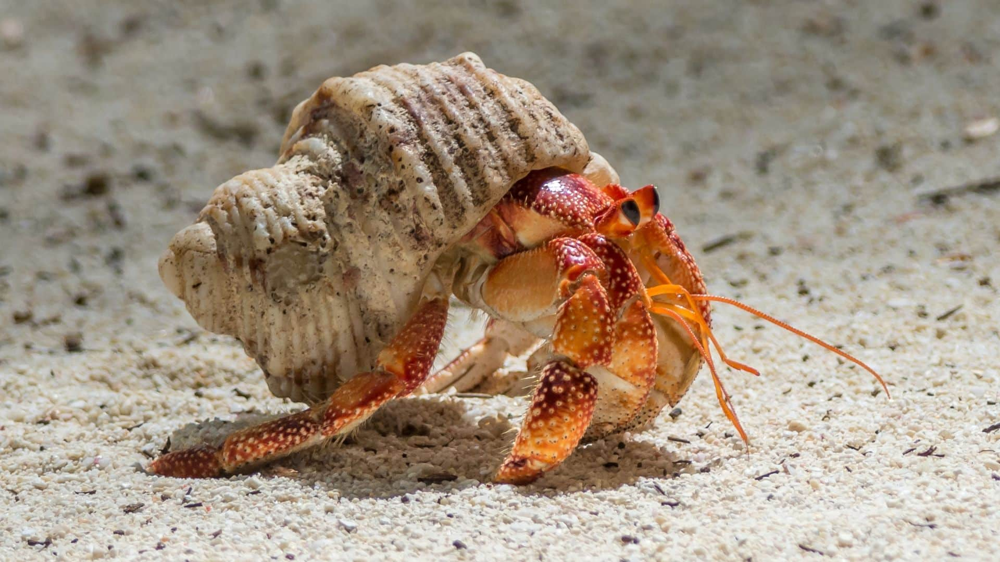

Home
About Us
Cruz, Kobe Cruz D.
De Guzman, Kim Charles M.
Lapuz, Alfred Anthony J.
Turla, Djohn Paul A.
Dungeness Crab
An oval-shaped carapace that is yellow-brown to purplish. They have four pairs of walking legs and a pair of claws.
Fiddler Crab
Are small, semi-terrestrial crabs are characterized by extreme cheliped asymmetry in males.

Hermit Crab
A soft exoskeleton and a twisted abdomen to fit into snail shells.
King Crab
They range in color from brownish to bluish red and are covered in sharp spines. They have three pairs of walking legs and one pair of claws.
Rock Crab
A wide carapace that is quite smooth to the touch and two large claws of equal size with black tips.